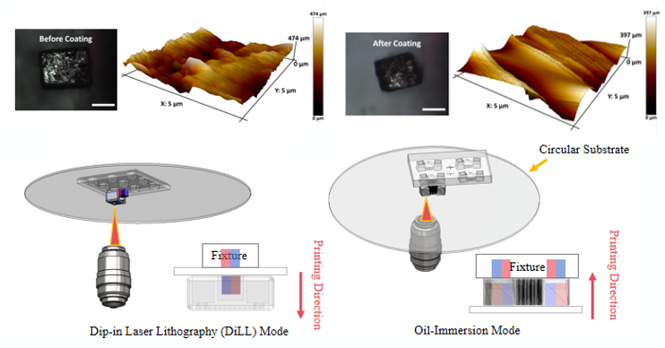
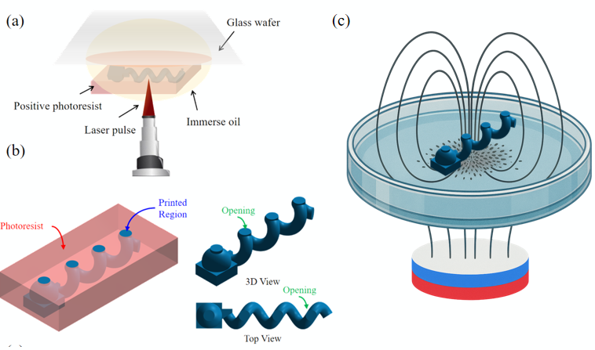
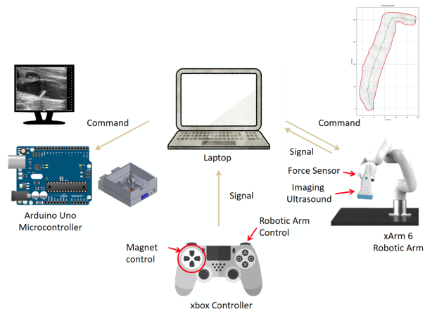
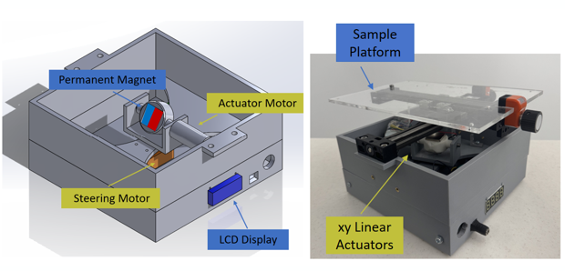
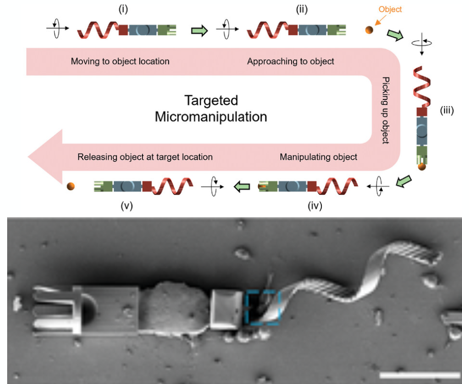
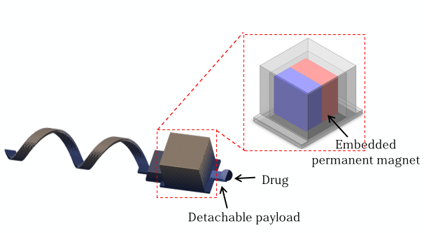
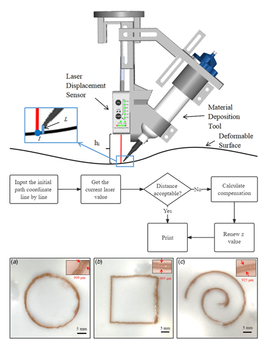
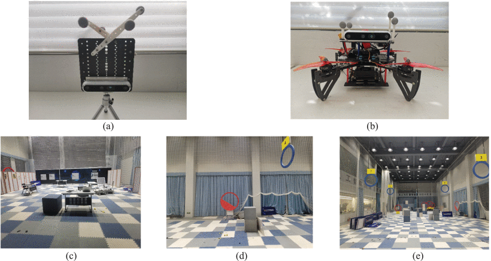

|
Yang Yang Hi! My name is Yang (Helen) Yang. I am a third-year Ph.D. student in the School of Mechanical Engineering at Purdue University, working in the Multi-Scale Robotics and Automation Lab under the supervision of Prof. David J. Cappelleri. I received my master’s degree in 2023 from University of Southern California (USC). I was fortunate to work with Prof. Satyandra K. Gupta. I received my B.S. in Mechanical Engineering in 2022 from Shanghai Jiao Tong University. During that time, I participated in a research internship with Prof. Danping Zou. I am broadly interested in microrobots, medical robotics, mircofabrication, and translational robotic systems for healthcare. |
{kind=link}
News
|
ResearchMy Ph.D. research focuses on magnetic actuated microrobots. My goal is to develop microrobots and robotic platforms that can navigate complex biological environments for minimally invasive diagnosis and therapy. * indicates equal contribution when applicable. |
|

Manuscript under review
This work is an extension of the "Magprint" project. We present an improved direct-printing strategy by
introducing a sputtering-based surface modification technique, to enhance magnetic-material compatibility and
interfacial reliability. This enables robust integration of both pre-coated and surface-treated magnets.
 
Journal of Medical Robotics Research
This work presents thermal-responsive helical adaptive microswimmers fabricated through a two-photon polymerization (2PP)-based mold-assisted fabrication method.
Instead of directly printing the final microrobot material using Nanoscribe, a negative mold is first fabricated using a 2PP-compatible resin, which enables
the fabrication of microrobots from functional materials that are difficult to directly process by 2PP.
In this study, a NIPAM-based hydrogel integrated with iron oxide nanoparticles was used to form magnetically responsive microswimmers with temperature-dependent
shape-changing capability. The helical tail of the microswimmer can reversibly deform in response to temperature variations, allowing the robot geometry and locomotion behavior to adapt to environmental changes.

2025 International Conference on Manipulation, Automation and Robotics at Small Scales (MARSS)
In this work, we present a novel direct-printing strategy that integrates permanent micro-magnets into microrobots during the two-photon polymerization (TPP) process,
eliminating the need for post-assembly alignment or insertion. We demonstrate the fabrication of three functional microrobotic platforms: (1) a helical microswimmer for efficient propulsion,
(2) a tumbling microrobot, and (3) a compliant micro-gripper capable of precise grasping and manipulation.
  
Advanced Robotics Research
In this work, we introduce a hollow two-photon polymerized microrobot whose ports are sealed by a mechanically interlocked heneicosane wax cap within a suspended microgrid, retaining seal integrity during locomotion in
biologically relevant environments. In vitro, microrobots loaded with doxorubicin remained stable at body temperature (37°C) and exhibited complete, step-like discharge within 1 min once the bath temperature crossed
the 40–42°C threshold.
Focused ultrasound (FUS) heating to 42°C triggered on-demand release of an echogenic nanoparticle tracer, producing a distinct contrast plume.
My responsibility is to design a semi-automated integrated control framework.
The architecture combines an Arduino-controlled magnetic actuation system, a 6-DOF robotic manipulator with force sensing, an ultrasound imaging system, and an Xbox controller as a unified user interface.
The controller enables simultaneous operation of both subsystems,
where discrete inputs are used for magnetic actuation and analog inputs are used for robotic arm control. This dual-input design allows coordinated manipulation of both the microrobot and the imaging probe in real time.
 
Advanced Functional Materials
This work combines experiments, finite element analysis, and dynamic modeling to systematically investigate the swimming behavior of microswimmers before and after environment-induced deformation.
The multi-material adaptive microswimmers are fabricated using photolithography and two-photon polymerization, enabling shape-adaptive locomotion under different environmental conditions.
A targeted object delivery application is also demonstrated using the proposed microswimmer. My contributions include fabricating the shape-adaptive microrobots, characterizing their swimming speed,
and performing the targeted delivery experiments.
 
2024 International Conference on Manipulation, Automation and Robotics at Small Scales (MARSS)
This research presents a new design for a helical swimming microrobot with a detachable payload.
It is composed of a helical microrobot made from IP-L, a biodegradable hydrogel connector made from GelMA, and a spherical payload.
The obtained swimming microrobots are able to perform payload delivery with the potential for reusability.
Before starting my Ph.D., I gained experience in robotic arm control and mechanical design, which laid the foundation for my current research in magnetic microrobotics and biomedical robotic systems. 
Journal of Manufacturing Science and Engineering
In this work, we propose simple tool center point calibration, initial point coordinate estimation, and a gap compensation scheme to realize real-time feedback control and direct conformal
deposition using a 6-DOF manipulator.
Combining these elements allows us to maintain a controlled gap between the tooltip and the deformable surface during the deposition. [video]

UAV Navigation with High Resolution Intelligent Sensing Technology
I worked with Prof. Danping Zou on the mechanical design of unmanned aerial vehicles (UAV) with application-specific functional requirements.
I used SolidWorks to design the UAV structure and coordinated with manufacturers to discuss fabrication details and production feasibility.
The resulting UAV model was later widely used in his research work.
|
Experience
Cook Advanced Technologies
May 2026 – Present
Engineering Intern, West Lafayette, IN
Managers: Sarah Robbins and
Jesse Roll
Topic: Autonomous Point-of-Care Interventional Microrobots
Tesla, Inc.
Jan. 2023 – May 2023
Manufacturing Engineering Intern, Austin, TX
Manager:
Chao Gu
Topic: Tesla Cybertruck Stamping Process Finalization
|
Awards
|
Services
|
TeachingPurdue University
SP 26
FA 24
University of Southern California
- AME 441aL Senior Project Laboratory I
FA 22
- AME 341b Mechoptronics Laboratory
SP 22
Shanghai Jiao Tong University
- VG 496 Professional Ethics
SU 22, SU 21
- VM 250 Design and Manufacturing I
SP 21
- VM 382 Mechanical Behavior of Material
FA 20
|
MomentsOutside the lab, I enjoy traveling, exploring new places, and capturing moments from daily life. 
Travel moment

Weekend exploration

A favorite view

On the road

City walk

Nature and landscape
|
|
Website template adapted from a lightweight academic GitHub Pages layout. Last updated: 2026. |